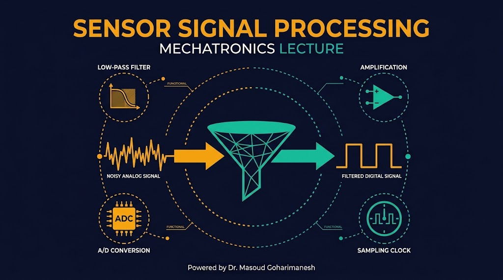
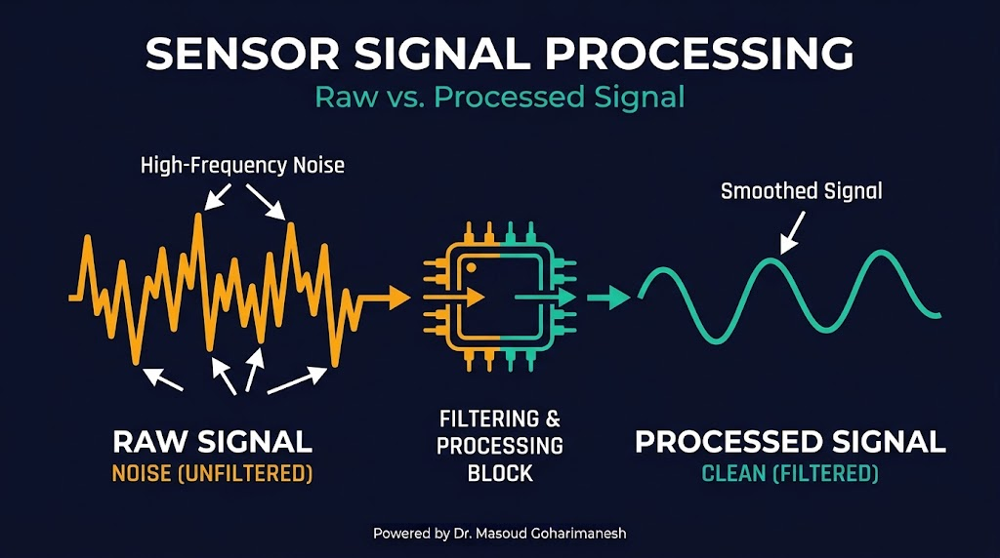
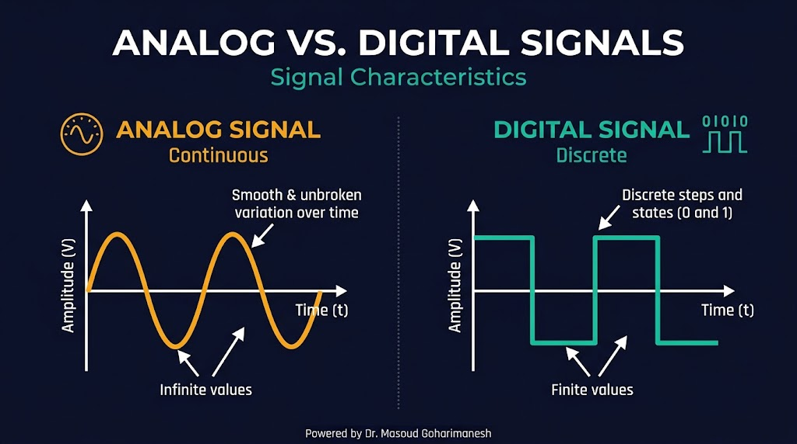
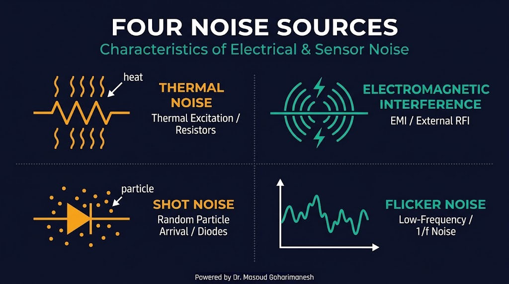
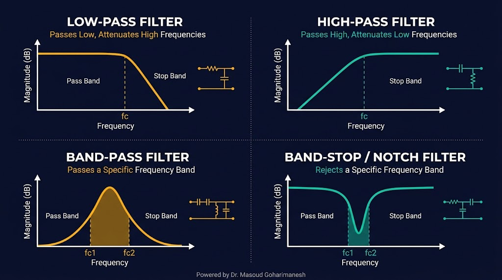
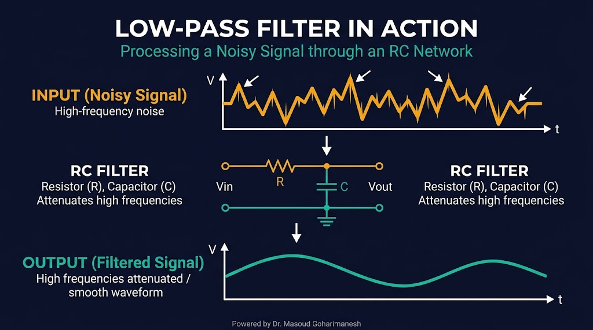
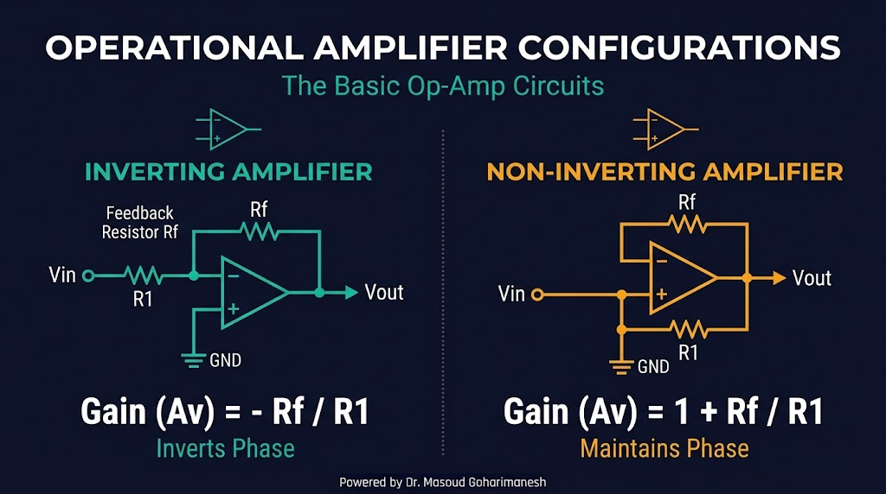
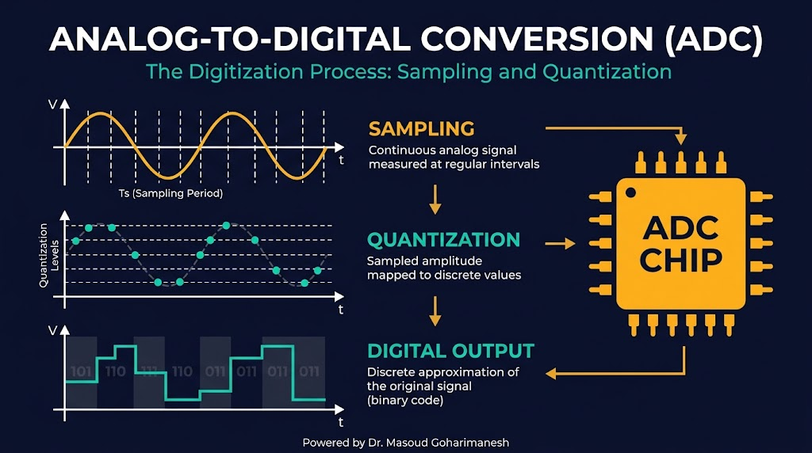

فیلترها، تقویتکنندهها و تبدیل آنالوگ به دیجیتال
دکتر مسعود گوهریمنش
دانشیار گروه مهندسی مکانیک
دانشگاه تربت حیدریه | پاییز ۱۴۰۵
بدون پردازش سیگنال، سنسورهای دقیق هم دادههای بیاستفاده تولید میکنند!
چگونه میتوان یک سیگنال ضعیف و پرنویز را به یک سیگنال تمیز و قابل استفاده تبدیل کرد؟
از سیگنال خام تا داده قابل استفاده

آنالوگ، دیجیتال و تفاوتها

دشمن اصلی اندازهگیری دقیق

انتخاب فرکانسهای مورد نظر

پرکاربردترین فیلتر در پردازش سنسور

سادهترین فیلتر پایینگذر: یک مقاومت و یک خازن
مثال: R=10kΩ, C=1µF → f_c ≈ 16 Hz
پیادهسازی نرمافزاری فیلتر
سادهترین فیلتر دیجیتال: میانگینگیری از N نمونه اخیر
const int N = 10;
int readings[N];
int index = 0;
long total = 0;
int filteredRead() {
total -= readings[index];
readings[index] = analogRead(A0);
total += readings[index];
index = (index + 1) % N;
return total / N;
}
ساده، سریع، بدون نیاز به قطعه سختافزاری — مناسب برای فیلتر نویز فرکانس بالا
قلب مدارات آنالوگ

خروجی ۱۸۰ درجه اختلاف فاز دارد
بهره همیشه بزرگتر از ۱ — فاز یکسان
مدارات شرطسازی سیگنال
در گریپر ربات، سنسور فشار خروجی ۰-۲۰mV دارد. با یک Op-Amp غیرمعکوسکننده با بهره ۲۵۰، به ۰-۵V تبدیل میشود که برای آردینو مناسب است.
چگونه آنالوگ را به دیجیتال تبدیل کنیم؟
برای بازسازی صحیح یک سیگنال، فرکانس نمونهبرداری باید حداقل دو برابر بیشترین فرکانس موجود در سیگنال باشد.
اگر فرکانس نمونهبرداری کمتر از حد نایکوئیست باشد، فرکانسهای بالا بهصورت کاذب بهعنوان فرکانسهای پایین نمایش داده میشوند. راهکار: استفاده از فیلتر پایینگذر آنالوگ قبل از ADC.
تبدیل دامنه پیوسته به سطوح گسسته

آردینو UNO: ۱۰ بیت، V_ref=5V → رزولوشن ≈ ۴.۹mV
آردینو UNO: حدود ۱۰,۰۰۰ نمونه بر ثانیه (۱۰ kHz)
ESP32: تا ۲ MHz — مناسب سیگنالهای سریع
خواندن سنسورهای آنالوگ
void setup() {
Serial.begin(9600);
}
void loop() {
int rawValue = analogRead(A0); // 0-1023
float voltage = rawValue * (5.0 / 1023.0);
float temperature = voltage * 100; // LM35
Serial.print("Voltage: ");
Serial.print(voltage);
Serial.print(" V | Temp: ");
Serial.print(temperature);
Serial.println(" C");
delay(1000);
}
analogReference() برای تغییر V_refاثر فیلتر پایینگذر بر سیگنال نویزی
با تغییر نویز و ضریب α، اثر فیلتر را مشاهده کنید.
جلسه پنجم - پردازش سیگنالهای سنسوری
نکات کلیدی جلسه پنجم
جلسه بعد: عملگرها (بخش اول) — موتورهای DC، استپر، سروو
Powered by Dr. Masoud Goharimanesh